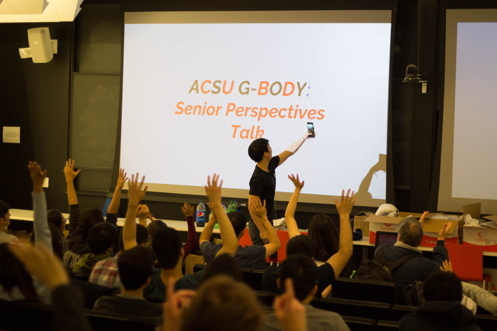
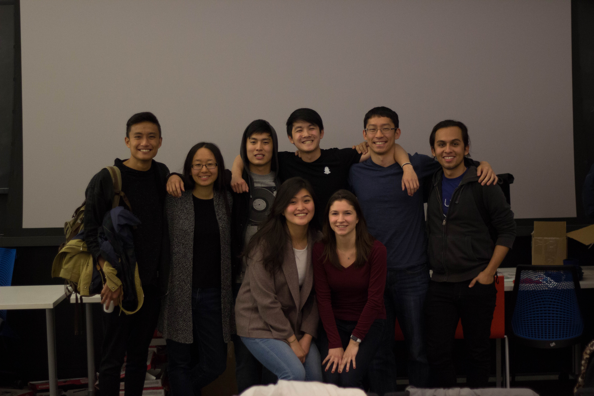

<script>
$(".navbar-custom").css('background-color', '#272940');
</script>

<!-- Section: gbody -->

<section id="calen" class="home-section text-center">
    <div class="heading">
        <div class="heading-about">
            <div class="container">
                <div class="row">
                        <div class="wow bounceInDown" data-wow-delay="0.4s">
                            <div class="section-heading">
                                <h2>General Body Meetings</h2>

                                <p> The ACSU holds monthly General Body Meetings throughout the academic year. <br/>
                                Our G-Bodies have a time-honored tradition of serving <b>Free Pizza</b>. <br/><br/><br/>
                                <font size="-1">
                                The meetings are free and open to anyone and everyone who wants to attend, <br/>making them an excellent source of sustenence, <br/>both in the <b>short term</b> ("<i>What do I eat tonight?</i>"), <br/>and in the <b>long term</b> ("<i>What will get me food when I graduate?</i>")</font></p><br/>

                                <br/><br/>
                                <p><i>May 2017 G-Body: Senior Perspective Talk</i>
                                    <br/> <font size="-1">Pictured: George Ding '17 </font></p>
                                <br/>
                                <br/><br/>
                                <p><i>May 2017 G-Body: Senior Perspective Talk<br/><font size="-1">Pictured (left to right): Andrew Aquino '17, Kelly Yu '17, Kenneth Lee '17, George Ding '17, Ji Hun Kim '17, Kevin Chavez '17, Seung Hee Han '17, Agnes Csaki '17 </font></i></p>
                            </div>
                    </div>
                </div>
            </div>
        </div>
    </div>
</section>

<!-- /Section: gbody -->
